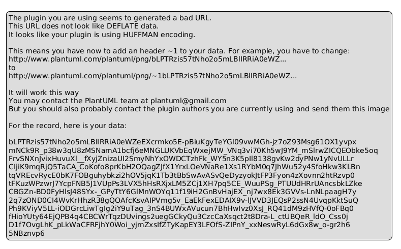
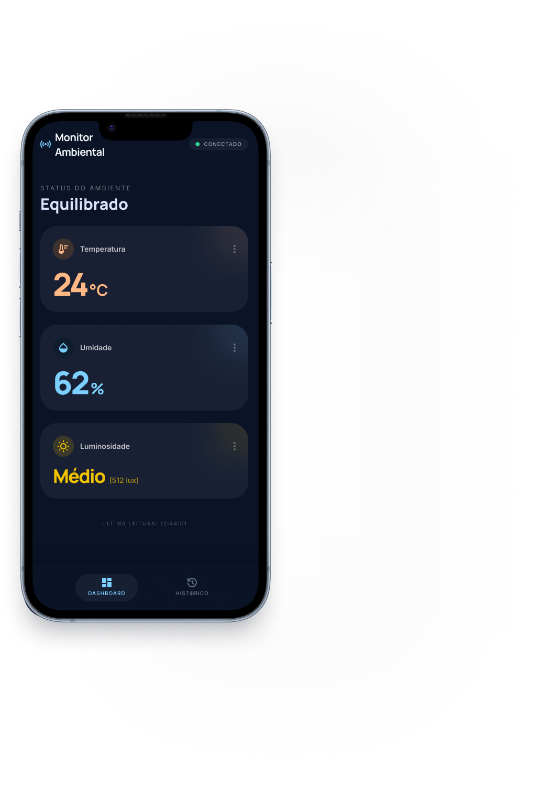
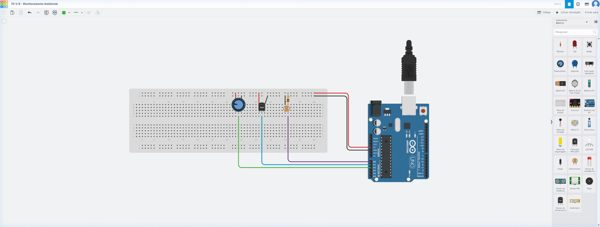

1 INTRODUÇÃO ............................................................................. 3
1.1 Motivação e Proposta ............................................................. 3
1.2 Justificativa ........................................................................... 3
2 OBJETIVOS ................................................................................ 4
2.1 Objetivo Geral ........................................................................ 4
2.2 Objetivos Específicos ............................................................. 4
3 TECNOLOGIAS E FERRAMENTAS UTILIZADAS ............................ 4
3.1 Camada Arduino ..................................................................... 4
3.2 Camada Java ........................................................................... 5
4 METODOLOGIA ........................................................................... 5
4.1 Arquitetura do Sistema ........................................................... 5
4.2 Diagrama de Classes UML ...................................................... 6
4.3 Protótipo da Interface ............................................................. 6
5 RESULTADOS .............................................................................. 7
5.1 Circuito Arduino (Tinkercad) ................................................... 7
5.2 Módulo Java ............................................................................ 7
5.3 Diagrama UML ........................................................................ 7
6 CONCLUSÃO ............................................................................... 8
7 REFERENCIAL TEÓRICO ............................................................. 8
Marcos é um estudante de Análise e Desenvolvimento de Sistemas que se mudou para uma casa antiga herdada de seu avô. Interessado em tecnologia e inovação, ele decidiu transformar sua nova residência em um "ambiente inteligente". Para iniciar, Marcos deseja monitorar temperatura, umidade e luminosidade em alguns cômodos, a fim de otimizar o uso de energia e garantir seu conforto.
Para atingir esse objetivo, Marcos identificou a necessidade de desenvolver um sistema de baixo custo utilizando componentes acessíveis e linguagens de programação amplamente utilizadas no mercado. Optou por um protótipo inicial utilizando a plataforma Arduino para coleta de dados e a linguagem Java para a aplicação que processa e exibe as informações em uma interface gráfica intuitiva.
O monitoramento de ambientes inteligentes é cada vez mais relevante para economia de energia, conforto e segurança. A crescente adoção de dispositivos IoT (Internet das Coisas) no cotidiano reforça a importância de profissionais da área de TI compreenderem o desenvolvimento de sistemas embarcados integrados com aplicações de software.
A combinação de Arduino — pelo seu baixo custo, ampla documentação e facilidade de prototipagem — com Java — pela sua robustez, portabilidade e ampla adoção na indústria — torna este projeto um excelente caso de estudo para prototipagem de sistemas IoT em contexto acadêmico.
Desenvolver um sistema protótipo de monitoramento de ambientes inteligentes utilizando a plataforma Arduino UNO e a linguagem Java, integrando coleta de dados físicos com exibição em tempo real numa interface gráfica intuitiva.
A camada de aquisição de dados foi desenvolvida utilizando a plataforma Arduino UNO R3, com dois sensores físicos conforme descrito na Tabela 1.
Tabela 1 — Componentes do circuito Arduino
| Componente | Descrição | Pino |
|---|---|---|
| Arduino UNO R3 | Plataforma de prototipagem de hardware aberto | — |
| Sensor TMP36 | Sensor analógico de temperatura (°C) — saída de tensão proporcional | Analógico A1 |
| LDR + Resistor 10kΩ | Divisor de tensão para leitura analógica de luminosidade (0–1023) | Analógico A0 |
| Potenciômetro | Simula umidade relativa do ar (0–100%) na simulação Tinkercad | Analógico A2 |
O protocolo de comunicação serial adotado foi: baud rate de 9600 bps, com dados transmitidos no formato CSV com newline (temperatura,umidade,luminosidade\n), a uma frequência de uma leitura a cada 2 segundos. A temporização é implementada com millis(), evitando o uso de delay() para não bloquear o loop principal.
O módulo Java foi desenvolvido com Java SE 17 (compatível com Java 26), utilizando Maven como gerenciador de dependências. A Tabela 2 lista as principais bibliotecas utilizadas.
Tabela 2 — Dependências Java
| Biblioteca | Versão | Finalidade |
|---|---|---|
| jSerialComm (Fazecast) | 2.11.0 | Comunicação serial cross-platform, substituto moderno do RXTX |
| FlatLaf Dark (FormDev) | 3.4 | Look & Feel moderno e elegante para aplicações Swing |
O sistema é composto por duas camadas principais que se comunicam via porta serial USB:
Camada de aquisição (Arduino/Tinkercad): O Arduino UNO lê os sensores DHT11 e LDR continuamente e transmite os dados via porta serial no formato CSV. No ambiente simulado (Tinkercad), os sliders interativos permitem ajustar temperatura, umidade e luminosidade durante a execução da simulação para fins de validação.
Camada de processamento e exibição (Java MVC): O módulo Java recebe os dados seriais em uma thread em background (daemon thread), realiza o parsing do CSV no método estático SensorData.fromCsv(), e exibe os valores em tempo real em uma interface gráfica Swing com tema escuro moderno (FlatLaf Dark). Todas as atualizações de interface são garantidamente executadas na Event Dispatch Thread (EDT) via SwingUtilities.invokeLater(), seguindo as melhores práticas de desenvolvimento Swing.
O sistema Java segue o padrão arquitetural MVC (Model-View-Controller). A Figura 1 apresenta o Diagrama de Classes UML com as quatro classes principais do sistema e seus relacionamentos.

Figura 1 — Diagrama de Classes UML do Sistema de Monitoramento
As classes foram organizadas conforme o padrão MVC:
fromCsv() para parsing e validação da linha CSV recebida do Arduino.Consumer<SensorData>).main()), instancia e conecta as demais classes via callbacks.O protótipo visual da interface foi desenvolvido para representar a aplicação Java em operação. A Figura 2 apresenta o design do painel principal com os três cards de sensores.

Figura 2 — Protótipo da interface — Painel principal com dados dos sensores em tempo real
O circuito foi projetado e testado na plataforma Tinkercad. O sketch Arduino (arduino/sketch.ino) implementa a leitura do sensor TMP36 (pino analógico A1), do LDR (pino analógico A0) com divisor de tensão de 10kΩ, e de um potenciômetro que simula a umidade relativa (pino analógico A2), transmitindo dados a cada 2 segundos via Serial a 9600 bps no formato CSV.

Figura 3 — Circuito montado no Tinkercad: Arduino UNO R3 + TMP36 + LDR + Potenciômetro
Link da simulação no Tinkercad: https://www.tinkercad.com/things/eALbQIdph4d-pi-v-b-monitoramento-ambiental
O módulo Java foi implementado com sucesso e compilado via Apache Maven 3.9.6, gerando o JAR executável em java-app/target/monitoramento-ambiental.jar. A aplicação pode ser executada com o comando:
java -jar java-app/target/monitoramento-ambiental.jar
Repositório GitHub: https://github.com/novak-drg/project-integrator-v-b-puc
O Diagrama de Classes UML (Figura 1) documenta a arquitetura completa do sistema Java, com as quatro classes, seus atributos, métodos e relacionamentos segundo o padrão MVC.
O sistema de monitoramento de ambientes inteligentes foi desenvolvido com sucesso dentro do escopo proposto. A integração entre Arduino — simulado no ambiente Tinkercad — e Java demonstrou-se viável e educacionalmente rica, consolidando conceitos de:
O projeto atende a todos os entregáveis definidos no enunciado e representa uma base sólida para extensões futuras, como integração com hardware físico, histórico de leituras com gráficos temporais e suporte a múltiplos ambientes monitorados simultaneamente.
BANZI, Massimo; SHILOH, Michael. Getting Started with Arduino. 3. ed. Sebastopol: O'Reilly Media, 2015.
BLOCH, Joshua. Effective Java. 3. ed. Boston: Addison-Wesley, 2018.
MARGOLIS, Michael. Arduino Cookbook. 2. ed. Sebastopol: O'Reilly Media, 2012.
FAZECAST. jSerialComm: Platform-independent serial port access for Java. Disponível em: https://github.com/Fazecast/jSerialComm. Acesso em: 28 mar. 2026.
ORACLE. The Java Tutorials: Creating a GUI With Swing. Disponível em: https://docs.oracle.com/javase/tutorial/uiswing/. Acesso em: 28 mar. 2026.
ARDUINO. DHT11 — Temperature and Humidity Sensor Library. Disponível em: https://www.arduino.cc/reference/en/libraries/dht11/. Acesso em: 28 mar. 2026.